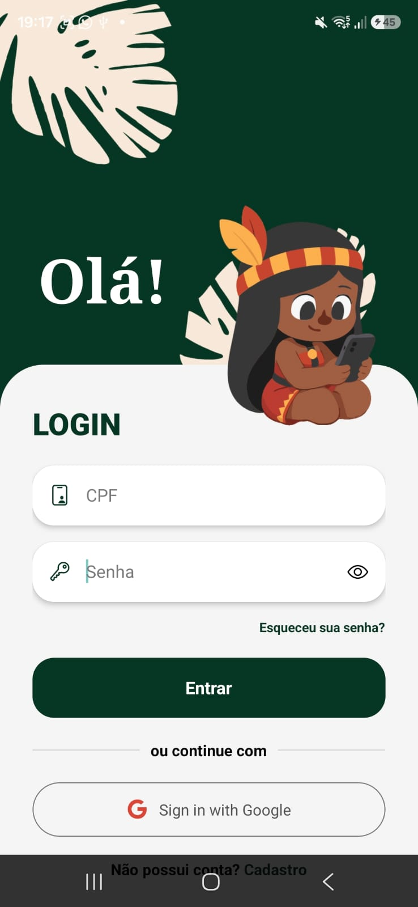
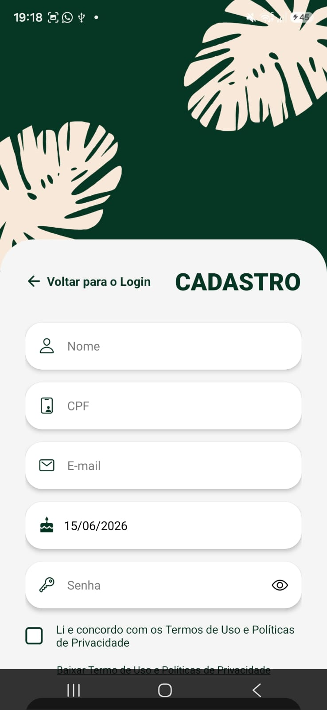
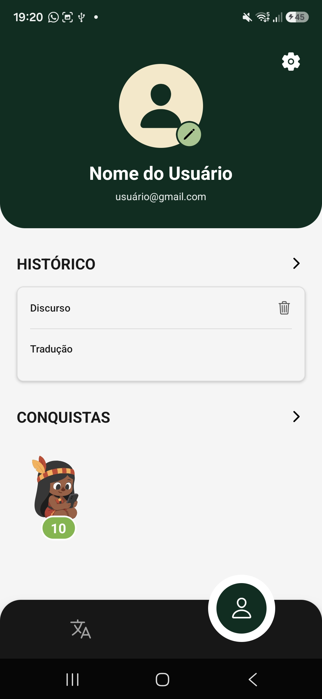
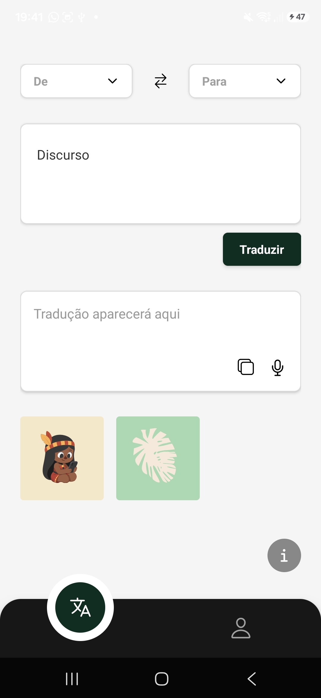

Evidências da Iteração 8
Atividade de Engenharia de Requisitos
Gestão de mudanças, detalhamento final e rastreabilidade: evidências de perfil, favoritos, histórico, acesso e recuperação de senha.
Evidências
DoR registrado nas UCs
- DoR verificável da UC12 - Gerenciar Perfil Pessoal
- DoR verificável da UC06 - Gerenciar Acessos e Permissões
- DoR verificável da UC07 - Redefinir Senha de Acesso
Prototipação registrada nas UCs
- Protótipo da UC12 - Gerenciar Perfil Pessoal
- Protótipo da UC06 - Gerenciar Acessos e Permissões
- Protótipo da UC07 - Redefinir Senha de Acesso
DoD registrado nos PRs
Os links abaixo redirecionam para os Pull Requests onde o Definition of Done foi aplicado e verificado para cada UC.
- UC12 - Gerenciar Perfil Pessoal: adicionar link do PR
- UC06 - Gerenciar Acessos e Permissões: adicionar link do PR
- UC07 - Redefinir Senha de Acesso: adicionar link do PR
Revisão de Casos de Uso e Regras de Moderação
Objetivo: Retomar decisões de permissão, moderação e perfil para orientar o fechamento das funcionalidades implementadas nesta etapa.
Resumo da Reunião: Para esta iteração, o registro foi usado como referência para fechar funcionalidades ligadas ao perfil e ao controle de acesso. A decisão de alocar traduções favoritas no perfil orientou a implementação de favoritos, histórico e organização das informações do usuário. As definições sobre permissões também serviram de base para separar responsabilidades entre moderadores e administradores, mantendo a avaliação de denúncias com moderadores e a ação de banimento ao administrador. Assim, as funcionalidades finais de perfil, permissões e recuperação de senha foram alinhadas às regras previamente validadas com a cliente.
Decisões sobre a UC12 - Gerenciar Perfil Pessoal
Objetivo: Registrar as decisões específicas tomadas para fechar o escopo da UC12, principalmente sobre perfil, histórico de traduções e traduções favoritas.
Resumo da Decisão: A reunião definiu como a equipe iria implementar a UC12. Foram alinhados os dados editáveis do perfil, como nome, data de nascimento, e-mail e foto. Também ficou decidido que o fluxo deveria incluir tanto favoritar traduções pela tela de tradução quanto listar as favoritas no perfil. A equipe ainda registrou cuidados ligados à LGPD, especialmente sobre CPF, finalidade de uso dos dados e termo de uso.
Validação da UC12 com a Cliente
Objetivo: Apresentar à cliente o andamento da UC12 e coletar ajustes sobre perfil, histórico de traduções, favoritos e interface de tradução.
Resumo da Reunião: A equipe apresentou à cliente o andamento da UC12, incluindo histórico de traduções, traduções favoritas e edição de perfil. A cliente validou a proposta geral, mas sugeriu ajustes de interface, como deixar os cards de histórico e favoritos mais resumidos e evitar poluição visual. Também foi discutido que a edição de perfil funcionaria melhor como página, e não como modal. A reunião ainda registrou decisões sobre remover opções sem uso na tela de tradução e ajustar ícones de favorito e áudio.
Alinhamento Final de Escopo e Cronograma
Objetivo: Revisar o cronograma após a antecipação da entrega final e confirmar o escopo restante do MVP.
Resumo da Reunião: A equipe revisou o cronograma após a antecipação da entrega final e discutiu se seria necessário retirar alguma funcionalidade do MVP. Foi decidido manter o escopo previsto, pois a UC12 já estava encaminhada, a gamificação/insígnias estava praticamente pronta e a UC06 ainda seria concluída dentro do prazo. Também ficou combinada uma nova validação com a cliente para apresentar acesso offline, perfil do usuário, administração de acesso e demais funcionalidades pendentes. A equipe ainda alinhou que a semana seguinte seria usada como fase de transição, com testes finais, geração do APK, correções e preparação da entrega.
Implementações aguardando validação
Refatoração de telas: O protótipo no Figma já havia sido apresentado e aprovado pela cliente. Assim, a equipe implementou as telas e ficou no aguardo da próxima reunião para validação.



